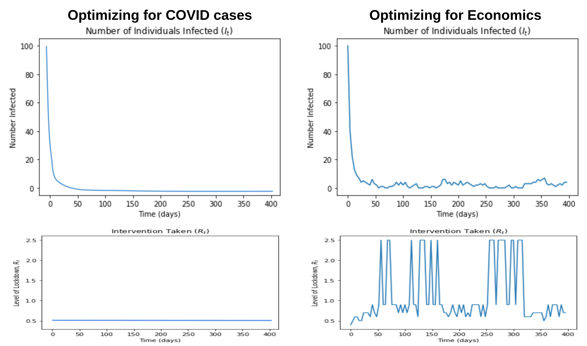
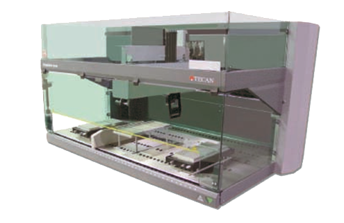

Blake Elias
LinkedIn | Email | Twitter | Google Scholar
About
I'm a researcher and engineer interested in accelerating positive-sum outcomes for society.
My goal is to build tools and processes that amplify collective intelligence, facilitate (group) decision-making, and enable better social systems.
Work
I completed my SB and MEng degrees at MIT in Electrical Engineering and Computer Science, where I worked in the Media Lab and Synthetic Biology Center.
Since then, I've explored ML research as an AI Resident at Microsoft Research, where I worked on neural-symbolic computation and human-AI collaboration.
I've also explored quantitative social science at the New England Complex Systems Institute, where I derived optimal pandemic response policies using tools from game theory and optimization.
Currently, I work as a software engineer at Google, focused on HW/SW co-design and reliability for ML chips (TPUs).
Recent Writing
Multi-Agent Cooperation via Intrinsic MotivationMarch 2, 2021
Intrinsic Reward, Biological Utility, and Saving the PlanetMarch 1, 2021
Open-Endedness, Multi-Agent Learning and Existential RiskOctober 10, 2020
Should the World Stay Home for a Month?March 11, 2020
Publications
|  |
Pandemic Response as Reinforcement Learning Blake Elias, Alexander Siegenfeld, Yaneer Bar-Yam. NeurIPS 2020 Workshop on Machine Learning for Economic Policy. paper | code |
 |
Human-Machine Collaboration for Fast Land Cover Mapping Caleb Robinson, Anthony Ortiz, Kolya Malkin, Blake Elias, Andi Peng, Dan Morris, Bistra Dilkina, Nebojsa Jojic. Thirty-Fourth AAAI Conference on Artificial Intelligence, 2020. Oral. pdf | arXiv | code | video |
|  |
High Throughput Pin-Tool Based Automated DNA Assembly Master of Engineering Thesis, Electrical Engineering and Computer Science, MIT, 2018. pdf | MIT DSpace |
Covid
 |
Is Locking Down Worth It? Blake Elias, Alexander Siegenfeld, Yaneer Bar-Yam. |
|
Pandemic Lockdown Decision-Making Bruno Felix, Chris Moreno-Stokoe, Sascha Frankel, Lennart Quispel, Ana Martinovici, Blake Elias, Yaneer Bar-Yam |
|
|
Respiratory Health for Better COVID-19 Outcomes Blake Elias, Chen Shen, Yaneer Bar-Yam. March 16, 2020. New England Complex Systems Institute. pdf | web |
|
|
Should the World Stay Home for a Month? March 11, 2020. |
|
|
Could Air Filtration Reduce COVID-19 Severity and Spread? Blake Elias, Yaneer Bar-Yam. March 9, 2020. New England Complex Systems Institute. pdf | web |
Coding Projects
 |
Neural-Symbolic Program Synthesis poster |
|
Toski (Scheme Debugger) Kenneth Friedman, Blake Elias, Jared Pochtar code | report | blog |
|
|
Homer: Spaced Repetition Learning code | report |
|
 |
Zero Robotics competition (team founder) Team site | code (2010) | code (2011) | video (simulation) | video (ISS run) |
|
FIRST Robotics Competition code (2010-2011) | code (2012) | video |
|
|
3D Rendering from Scratch in C code | gallery |
Writing


{kind=link}
What I'm Reading / Watching
Problems of Knowledge and Freedom |

Design as Participation |
 Behavior Without Utility |